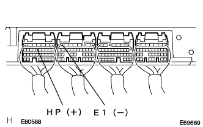
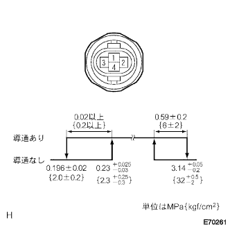
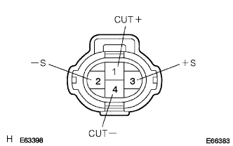
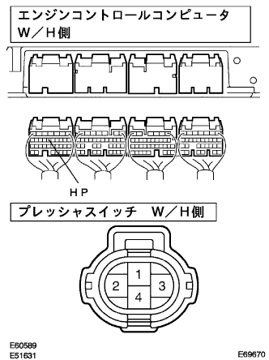

Hita & Air Condition Syona System Pressing Switch Circuit |
| Step 1 | Engine Control Computer Single Inspection (HP) |
|  |
Turn on the IG switch.
Use SST (Toyota Electrical Tester) to measure the voltage between the connector A13 (HP) terminal ← → B7 (E1) of the engine controlled compilation.
| Measurement conditions | Reference value |
|---|---|
| Refrinction from the refrigerant pressure when normal | 1V or less |
| Refrigerant pressure 0.19MPa {2.0kgf/cm2｝ Hereafter or refrigerant pressure 3.14MPa {32kgf/cm2｝以上 | 10-14V |
|
| ||||
| NG | |
| Step 2 | Liquid tube SUB-ASSY A single inspection (pressure switch) |
Separate the connector of the pressure switch.
High -voltage side conduct inspection
|  |
Use SST (Toyota Electrical Tester) to inspect the conjunction between 1 connector 1 terminal ← → 4 terminals.
Medium pressure side inspection
 |
Use SST (Toyota Electrical Tester) to check the conversation between the connector 2 terminals ← → 3 terminals.
|
| ||||
| OK | |
| Step 3 | Wire harness or connector inspection (IG Switch-pressure switch) |
Separate the connector of the pressure switch.
|  |
Use SST (Toyota Electrical Tester) to check the intake between the vehicle of the pressure switch Wire harness side connector 1 (CUT+) terminal ← → body earth.
|
| ||||
| OK | |
| Step 4 | Wire harness or connector inspection (engine control computer-pressure switch) |
Cut the connector of the engine controlled compilation.
|  |
Use SST (Toyota Electrical Tester) to inspect the conduction and GND short (short circuit) between the connector terminals of the vehicle wire harness.
| Engine control compilation side side Terminal number (terminal symbol) | Press switch side Terminal number |
|---|---|
| A13 (HP) | 4 |
|
| ||||
| OK | ||
| ||